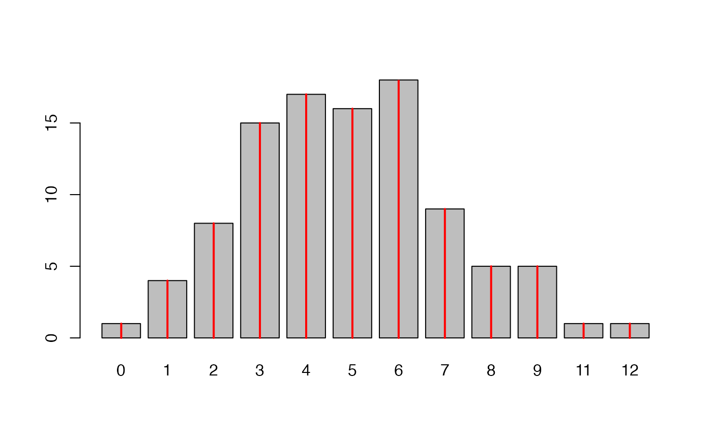
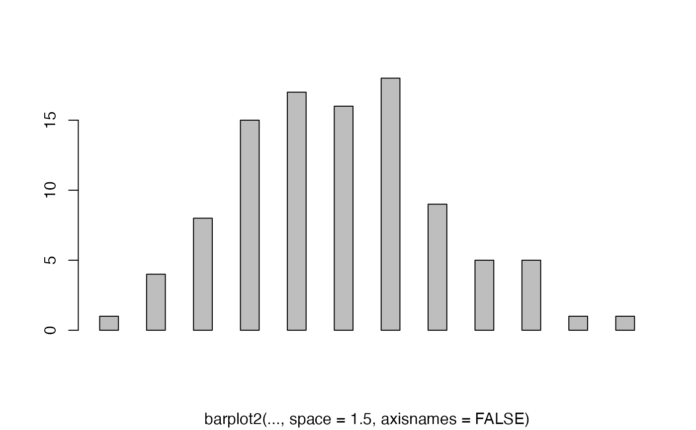
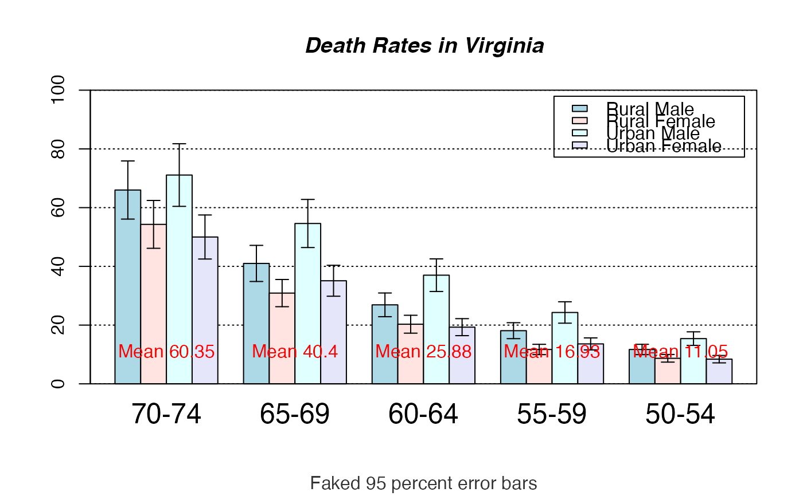

barplot2.RdAn enhancement of the standard barplot() function. Creates a bar plot with vertical or horizontal bars. Can plot confidence intervals for each bar, a lined grid behind the bars, change plot area color and logarithmic axes may be used.
# S3 method for default barplot2(height, width = 1, space = NULL, names.arg = NULL, legend.text = NULL, beside = FALSE, horiz = FALSE, density = NULL, angle = 45, col = NULL, prcol = NULL, border = par("fg"), main = NULL, sub = NULL, xlab = NULL, ylab = NULL, xlim = NULL, ylim = NULL, xpd = TRUE, log = "", axes = TRUE, axisnames = TRUE, cex.axis = par("cex.axis"), cex.names = par("cex.axis"), inside = TRUE, plot = TRUE, axis.lty = 0, offset = 0, plot.ci = FALSE, ci.l = NULL, ci.u = NULL, ci.color = "black", ci.lty = "solid", ci.lwd = 1, ci.width = 0.5, plot.grid = FALSE, grid.inc = NULL, grid.lty = "dotted", grid.lwd = 1, grid.col = "black", add = FALSE, panel.first = NULL, panel.last = NULL, ...)
| height | either a vector or matrix of values describing the
bars which make up the plot. If |
|---|---|
| width | optional vector of bar widths. Re-cycled to length the
number of bars drawn. Specifying a single value will no visible
effect unless |
| space | the amount of space (as a fraction of the average bar
width) left before each bar. May be given as a single number or
one number per bar. If |
| names.arg | a vector of names to be plotted below each bar or
group of bars. If this argument is omitted, then the names are
taken from the |
| legend.text | a vector of text used to construct a legend for
the plot, or a logical indicating whether a legend should be
included. This is only useful when |
| beside | a logical value. If |
| horiz | a logical value. If |
| density | a vector giving the the density of shading lines, in
lines per inch, for the bars or bar components.
The default value of |
| angle | the slope of shading lines, given as an angle in degrees (counter-clockwise), for the bars or bar components. |
| col | a vector of colors for the bars or bar components.
By default, grey is used if |
| prcol | the color to be used for the plot region. |
| border | the color to be used for the border of the bars. |
| main, sub | overall and sub titles for the plot. |
| xlab | a label for the x axis. |
| ylab | a label for the y axis. |
| xlim | limits for the x axis. |
| ylim | limits for the y axis. |
| xpd | logical. Should bars be allowed to go outside region? |
| log | a character string which contains `"x"' if the x axis is to be logarithmic, `"y"' if the y axis is to be logarithmic and `"xy"' or `"yx"' if both axes are to be logarithmic. |
| axes | logical. If |
| axisnames | logical. If |
| cex.axis | expansion factor for numeric axis labels. |
| cex.names | expansion factor for names. |
| inside | logical. If |
| plot | logical. If |
| axis.lty | the graphics parameter |
| offset | a vector indicating how much the bars should be shifted relative to the x axis. |
| plot.ci | logical. If |
| ci.l,ci.u | The confidence intervals (ci.l = lower bound, ci.u =
upper bound) to be plotted if |
| ci.color | the color for the confidence interval line segments |
| ci.lty | the line type for the confidence interval line segments |
| ci.lwd | the line width for the confidence interval line segments |
| ci.width | length of lines used for the "t" at the end of confidence
interval line segments, as a multple of |
| plot.grid | if |
| grid.inc | the number of grid increments to be plotted |
| grid.lty | the line type for the grid |
| grid.lwd | the line width for the grid |
| grid.col | the line color for the grid |
| add | logical, if |
| panel.first | An expression to be evaluated after the plot region
coordinates have been set up, but prior to the drawing of the bars
and other plot region contents. This can be useful to add additional
plot region content behind the bars. This will also work if
|
| panel.last | An expression to be evaluated after the bars have been drawn, but prior to the addition of confidence intervals, a legend and the axis annotation |
| ... | further graphical parameters ( |
This is a generic function, it currently only has a default method. A formula interface may be added eventually.
A numeric vector (or matrix, when beside = TRUE), say
mp, giving the coordinates of all the bar midpoints
drawn, useful for adding to the graph.
If beside is true, use colMeans(mp) for the
midpoints of each group of bars, see example.
Prior to R 1.6.0, barplot behaved as if axis.lty = 1,
unintentionally.
0 (zero) and NA values in height will not be plotted if
using logarithmic scales.
If there are NA values in height and beside = FALSE,
values after the NA will not be plotted in stacked bars.
barplot2(tN, space = 1.5, axisnames = FALSE, sub = "barplot2(..., space = 1.5, axisnames = FALSE)")#> [1] 0.7 1.9 3.1 4.3barplot2(VADeaths, plot = FALSE, beside = TRUE)#> [,1] [,2] [,3] [,4] #> [1,] 1.5 7.5 13.5 19.5 #> [2,] 2.5 8.5 14.5 20.5 #> [3,] 3.5 9.5 15.5 21.5 #> [4,] 4.5 10.5 16.5 22.5 #> [5,] 5.5 11.5 17.5 23.5mp <- barplot2(VADeaths) # defaultbarplot2(VADeaths, beside = TRUE, col = c("lightblue", "mistyrose", "lightcyan", "lavender", "cornsilk"), legend = rownames(VADeaths), ylim = c(0, 100))# Example with confidence intervals and grid hh <- t(VADeaths)[, 5:1] mybarcol <- "gray20" ci.l <- hh * 0.85 ci.u <- hh * 1.15 mp <- barplot2(hh, beside = TRUE, col = c("lightblue", "mistyrose", "lightcyan", "lavender"), legend = colnames(VADeaths), ylim = c(0, 100), main = "Death Rates in Virginia", font.main = 4, sub = "Faked 95 percent error bars", col.sub = mybarcol, cex.names = 1.5, plot.ci = TRUE, ci.l = ci.l, ci.u = ci.u, plot.grid = TRUE)mtext(side = 1, at = colMeans(mp), line = -2, text = paste("Mean", formatC(colMeans(hh))), col = "red")box()# Example with horizontal bars, grid and logarithmic x axis barplot2(1:10 , log = "x", plot.grid = TRUE, grid.inc = 10, xlim = c(0.5, 20), horiz = TRUE, cex.axis = 0.9, prcol = "gray95")box()# Bar shading example barplot2(VADeaths, angle = 15 + 10 * 1:5, density = 20, col = "black", legend = rownames(VADeaths))# border : barplot2(VADeaths, border = "dark blue")